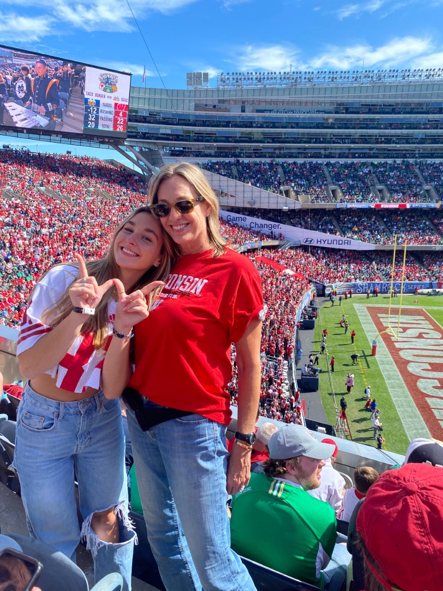
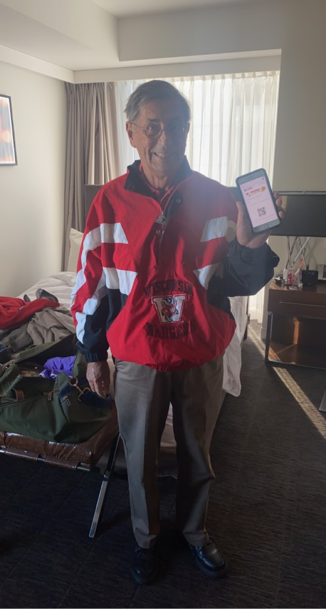

My sister and I are very close. We call eachother almost every day and visit each other when we can. We grew up with the same friends and shared everything we owned. She loves Boulder and I am going to visit her there this semester! She loves the outdoors and is really passionate about music.
My parents, Robert and Amy Milbourne, met in Milwaukee where I was born and then moved to Columbus when I was two years old. My mom is currently working at The Ohio State University as a development director at the law school and my dad is retired but was a Professor of Economics for 23 years at UW-Madison, and was the State Budget Director of Milwaukee. They live in a suburb of Columbus called New Albany with my two dogs.